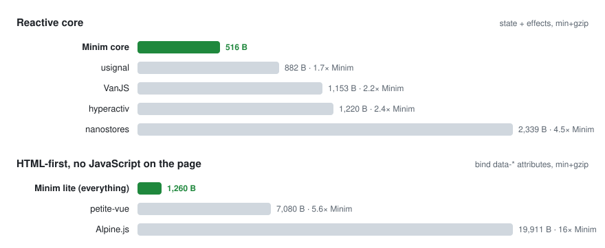

Models
Views
Hello, ! 👋
- Text
- Numbers
- Nested
- Counters
I like and my favorites are .
The smallest HTML-first reactive library.
0.5 KB core · 1.2 KB with everything · zero JavaScript on the page · nothing eval'd
Everything here runs on Minim plus concrete.css for looks —
2.4 KB of gzipped assets, no CSS classes, no build step. The state is a JSON tag in <head>
and the HTML binds to it by key. Open the console and type app.text = "tiramisu" — the page follows.
The only script written for this page is the three lines that fake a server fragment in the Late DOM demo.
Inputs with data-model write to the state; anything with data-watch reads from it.
data-bind mirrors values into attributes — the number field's min/max follow the two fields under it.
Hello, ! 👋
I like and my favorites are .
Plain <button command="…" commandfor="root"> elements — the HTML Invoker Commands API. No handlers, no onclick.
count is and there are todos. The greeting is on.
Markup that arrives after load — a fetch response, an htmx swap, a PHP partial — binds itself. Removed markup lets go of its bindings.

Same ruler for everyone: latest npm source, terser, gzip -9. The full table is in the README.
<!-- ES module, auto-boots -->
<script type="module" src="https://cdn.jsdelivr.net/npm/minimjs@3/dist/index.js"></script>
<!-- or a classic script: window.minim, auto-boots -->
<script src="https://cdn.jsdelivr.net/npm/minimjs@3/dist/minim.min.js" defer></script>Or paste the 1.2 KB lite build straight into <head> — the snippet is in
lite/README.md. From npm: npm i minimjs.